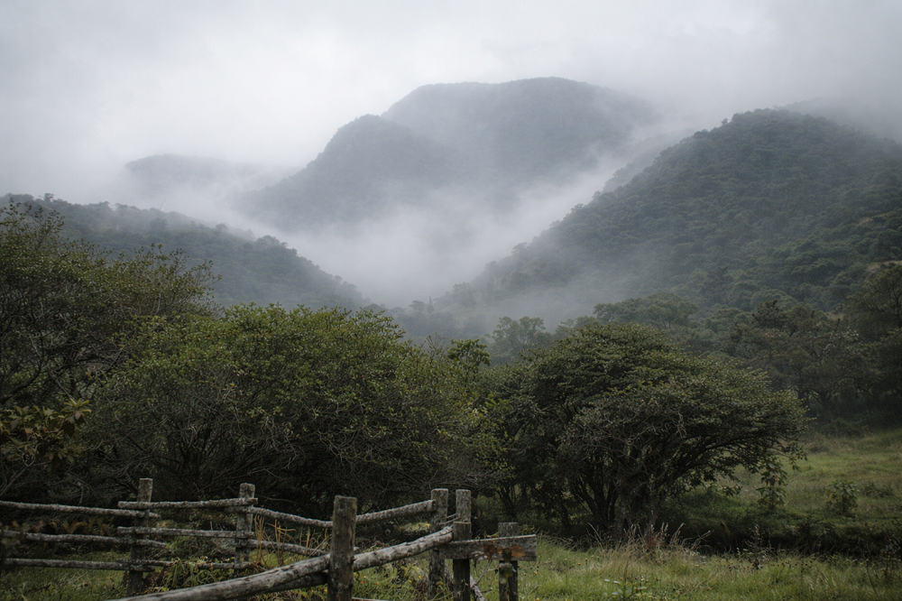

Home > Critical notes > From Quisquiza (02 of 20)
From Quisquiza (02 of 20)
Altitude
Working at 8°C
This note is part of a series written from Quisquiza, in the high-Andean cloud forest of Colombia, where ecological restoration and research now unfold side by side. It reflects on how living and working within this terrain gradually reshapes the way I think about memory, information, and the infrastructures built to sustain them. Check all the notes in this section's index.
Here, mornings begin at 5:30.
At 8°C.
(I know, I know. For many of you, that's not cold at all. But… I'm in Colombia. Here, that's cold. Quite cold.)
Cold enough for the seedlings in the garden to start doubting the meaning of life. Cold enough for hands to reconsider their plans for the day. Cold enough to require more than one Colombian tinto — the traditional black coffee around here — to get the morning started.
(Sometimes the coffee comes with a small splash of chirrinche, the local bootleg. Customary here. Don't judge.)
At this altitude, temperature is not scenery. It does not play a secondary role. It behaves like a spoiled diva. It is everywhere, regulating everything.
Which means friction. All the time. Everywhere.
So germination slows. Tender sprouts ask for a ruana. Roots grow cautiously, if they dare at all. Leaves that would expand shamelessly at lower elevations remain restrained, conservative, as if the plant itself were unsure about taking that step.
Birds think twice before singing. Epiphytic orchids are the clever ones: they grow under the shelter of stronger leaves, cushioned in moss (and seem to own an impressive collection of tiny ruanas themselves). The mountain toucan rarely begins calling before nine in the morning. The hummingbirds… well, good luck finding them.
Cold reorganizes the rhythm of the world up here.
Growth does not stop, of course, but it renegotiates its tempo. Energy moves more cautiously. Expansion waits for the right hour. Processes that look effortless in warmer climates suddenly require strategy, professional advice, and second opinions.
Around here, nothing and no one assumes the environment will cooperate. Everything proceeds conditionally. "Well, sumercé, we'll see how it goes…," as my campesino neighbors would say.
Altitude teaches through these conditions of friction. Through cold. Through fog, of course. And through that fine drizzle that doesn't seem to get you wet — but does.
When it comes to lessons in friction, knowledge and memory systems could learn quite a lot from this high-Andean and páramo landscape.
Their principles, goals, and assumptions often behave like lowland crops transplanted onto the slope of one of my mountains. Models designed under stable conditions react badly when confronted with friction: linguistic diversity, political pressure, ecological limits (or economic ones, or spatial ones…), institutional fatigue — and an etcetera so long it can make you want to cry.
In complicated, conditional environments, those elegant frameworks begin behaving like tropical seedlings in cold soil. First they hesitate. Then they stall. Most of them eventually collapse altogether.
A system that cannot adapt to context does not stabilize. It simply fails.
Altitude — the cold, fog-covered mountain — reveals something comfortable environments (like those of the city) tend to hide: robust systems are not those optimized for ideal conditions. They are those capable of operating under constraint, scarcity, and difficulty.
(And so I learned that cold is not just an inconvenience. It can also be a diagnostic tool. And an excellent teacher.)
(And an excuse for another splash of chirrinche. No coffee this time.)